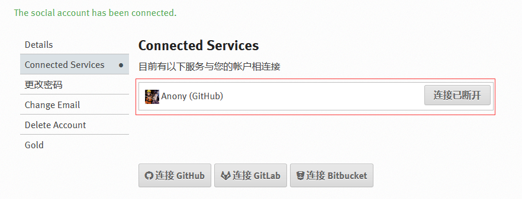

ReadtheDocs¶
参考文档
Read the Docs是一个开源项目文档托管和阅读工具。它提供了Sphinx文档的多种阅读方式，它主要有以下特点：
- 支持多种形式的阅读，
web/pdf/epub等，同时可以全文搜索 - 支持文档的版本控制，
git/svn等 - 支持对
github/gitlab等仓库中某个标签或分支托管的Sphinx文档的clone、build - 支持webhooks，当版本控制下的文档有更新时就会自动触发build文档
我们知道github虽然可以托管Sphinx文档，但是它无法解析build目录下生成的html文档以web形式展示阅读；这里我们将通过绑定Read the Docs工程和github仓库来实现对github托管的Sphinx文档进行clone克隆、build构建、web展示
导入仓库¶
第一次登录会出现以下界面
Import a Project：创建一个项目工程，Read the Docs中每个文档托管都是以一一个项目的形式存在Connect your Accounts：绑定账户，可以绑定GitHub/GitLab/Bitbucket，绑定后Read the Docs会自动搜索并列出可以被import创建项目工程的仓库；同时当导入仓库创建项目工程时，仓库会自动被设置webhooks功能
首先我们来绑定账户，这里我绑定我的GitHub账户
绑定成功后会显示已经绑定成功[注意：后面的连接已断开不表示当前连接断开了，而是当你点击后才会断开连接]

接着我们回到dashboard界面，点击import a project创建工程项目
此时我们可以通过两种方式创建工程项目：
- 前面我们说过，绑定github账号后，当你创建工程项目时，它会自动列出可以被导入创建的仓库，直接选择即可，但是不知道为什么，每次我这里都显示
No remote repositories - 手动导入，这里我选择这种方式
点击上述构建按钮后，会看到项目正在克隆，构建github仓库的Sphinx文档
在过几分钟，再点击构建，如果显示通过，那么项目工程创建成功
此时，如果我们查看github仓库的Settings中的Webhooks项自动添加了一个url，该url就是刚才创建的Read the Docs项目地址，当我们github仓库版本更新，它会自动触发webhooks机制，通知该url对应的Read the Docs工程仓库有版本更新，于是Read the Docs工程会自动触发clone、build动作，同步github仓库的版本更新
- 只有在创建项目工程之前绑定github账户，才会自动为github仓库设置
Webhooks，否则需要手动设置；具体可参考Webhooks官方文档

项目界面¶
当我们创建好一个项目，项目的dashboard有多个子项，每个子项有各自的用途

- 概况：项目的概述，如上图所示
- 阅读文档：通过web方式打开阅读文档
- 下载：提供pdf/epub文档的下载
- 搜索：关键字全文搜索
- 构建：显示版本构建的历史记录，点击每一个版本记录，就会看到该版本构建时的日志记录
- 当版本构建失败时，阅读构建日志可以帮助我们快速定位解决问题
- 管理：当前工程项目的所有配置信息，可以编辑修改保存
- 相关的设置说明可参考中文文档对应章节
FAQ¶
参考文档：官方FAQ文档
解决问题思路
- 查看build失败版本的版本日志记录
- 打开项目主页->点击
构建子项->点击构建fail的版本即可查看对应的构建日志记录
- 打开项目主页->点击
- 关键字搜索导致构建失败的日志记录
问题1¶
项目工程创建失败，点击项目dashboard的构建子项，然后点击显示fail的版本 ，查看构建日志，报错如下：
- 问题原因：在
conf.py配置文件中，我启用了latex_elements配置项，该项是Sphinx通过latex方式编译输出PDF文档的相关配置信息；如果使用英文编辑默认配置没什么问题，但是我的文档是用中文编写的，如果没有配置以下红框标注的preamble项，latex编译时就会报错，导致项目构建失败 \n和\b都是Python中的转义字符，所以配置中的\nobreakspace和\begin都需要使用两个\\- 如果将
latex_elements配置项注释掉，项目构建也不会失败